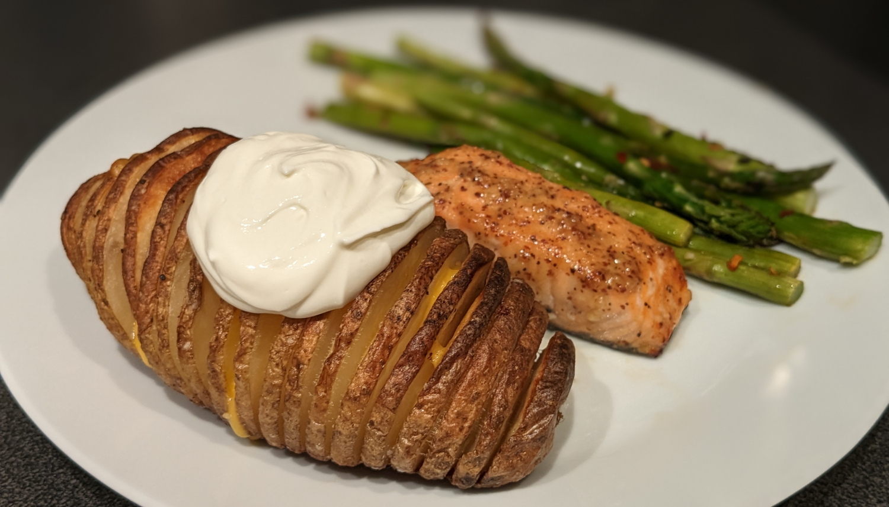

Hassleback Potatoes

Author: Sara Welch |
Cooked: January 14, 2023
Yields: 6 Servings | Prep Time: 15 Minutes | Cook Time: 60 Minutes
Ingredients
- 6 russet potatoes (medium sized)
- 1/4 c. butter, melted
- 1/4 c. olive oil
- Salt and pepper to taste
- 8 slices cheddar cheese, cut into 1" squares
- 1 c. sour cream
Directions
- Preheat oven to 450°F. Line a sheet pan with foil and spray with cooking spray.
- Wash potatoes well under hot water scrubbing away any dirt.
- Place a potato on a cutting board between two chopsticks (preferably chopsticks that you won't be sad if they get scratched up), and slice the potato into 1/4" thick slices down to the chopsticks. Note that, near the ends of the potato (the part not touching the chopstick), the stopping point must be manually figured out.
- Repeat with the remaining potatoes and take a second to appreciate how much better the last potato looks compared to the first. Place the potatoes on the sheet pan.
- In a small bowl, melt the butter in the microwave using 30 second bursts at 50% power. Add oil, salt, and pepper to the bowl and mix to combine. Taste to make sure there's enough salt.
- Brush the oil mixture over the potatoes making sure to get down into most of the cracks.
- Bake for 50-60 minutes until the potatoes are tender and browned.
- Remove from oven and place the cheddar cheese squares into the cuts of the potatoes.
- Return to oven and bake for an additional 5 minutes, until the cheese is melted.
- Remove from oven and top with preferred toppings (sour cream, bacon bits, green onion, sriracha, etc.).
Additional Notes
- Depending on the size of the potato, these could take much longer to cook. You can test by removing a center slice from your ugliest potato.
- Make sure to check the oil mixture to make sure it's salty enough. Our potatoes ended up needing a lot more salt.
- In the future I would for sure add more to the oil mixture. Garlic, chives, Parmesan cheese, etc.